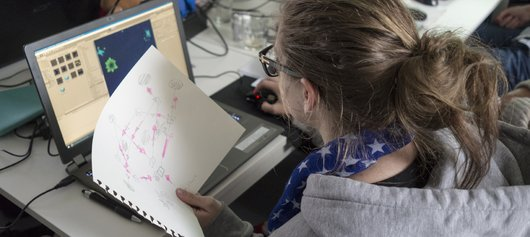

I
k ben de Alleskunner
►
Home
In de Praktijk
Over ma
Meld je Aan!
Contact
D
e opleiding
Wat leer je?
Met de snelle technologische vooruitgang is nu al een groot tekort aan programmeurs in Nederland, en dat tekort zal naar verwachting verder stijgen als er niet op korte termijn actie wordt ondernomen. Het is daarom belangrijk dat kinderen op jonge leeftijd enthousiast gemaakt worden voor programmeren. Om die reden geven studenten van de opleiding Mediadeveloper programmeerles op Amsterdamse basisscholen.
